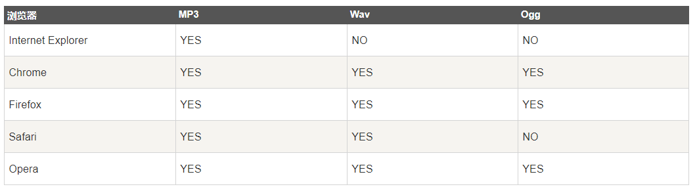
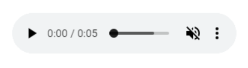
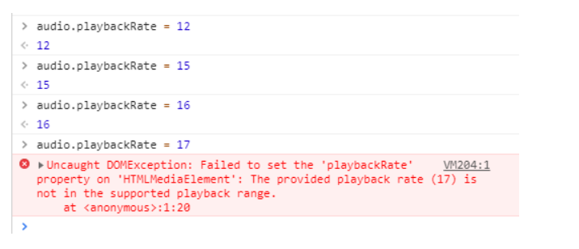
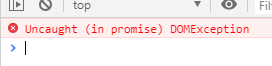
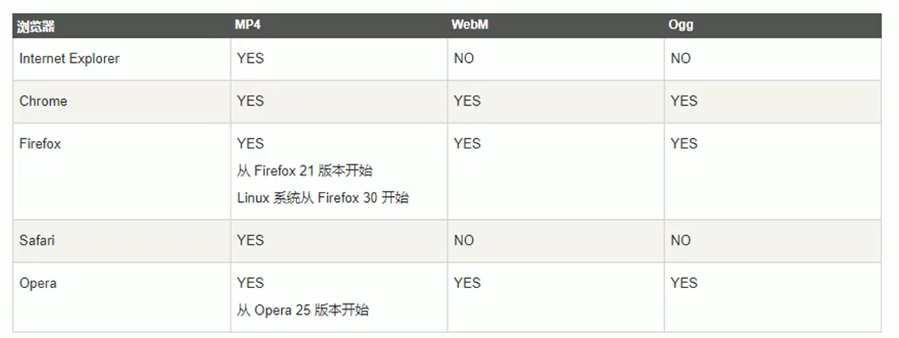
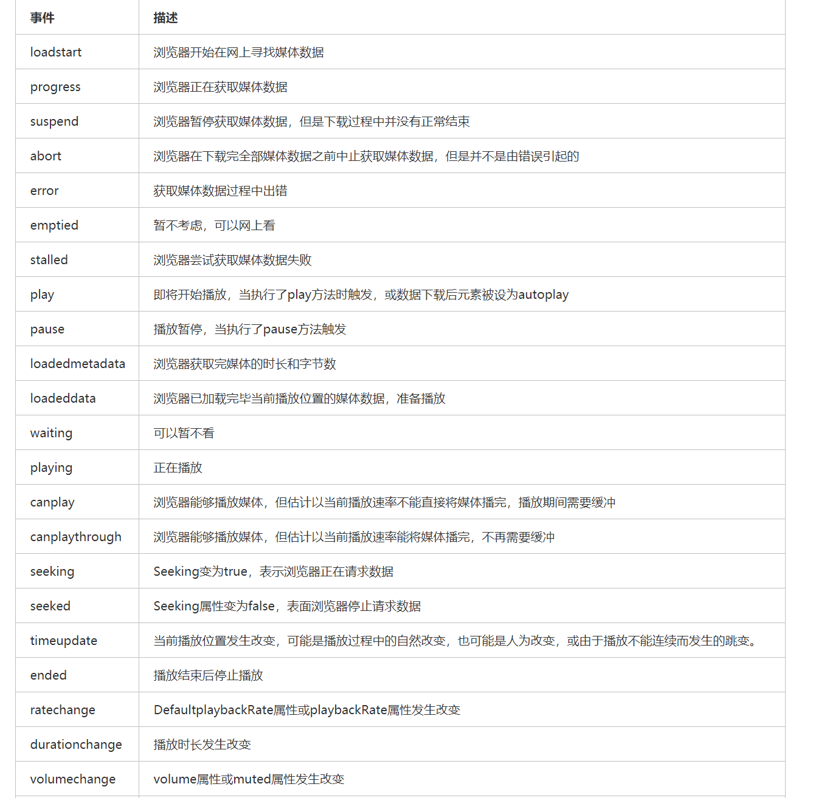
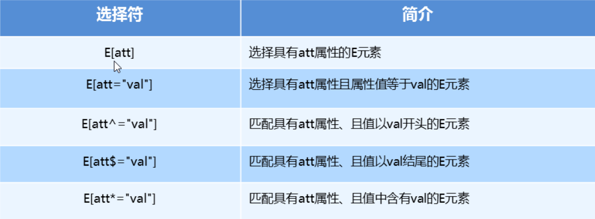
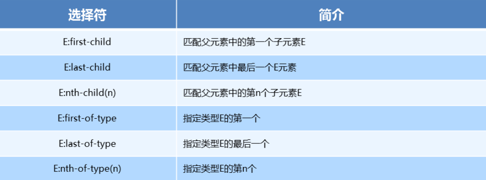

HTML5 的概念与定义
- 定义：
HTML5定义了HTML标准的最新版本，是对HTML的第五次重大修改，号称下一代的HTML - 两个概念：
- 是一个新版本的
HTML语言，定义了新的标签、特性和属性 - 拥有一个强大的技术集，这些技术集是指：
HTML5 、CSS3 、javascript, 这也是广义上的HTML5
- 是一个新版本的
HTML5 新增标签
- 新增了那些语义化标签
- header — 头部标签
- nav — 导航标签
- article — 内容标签
- section — 块级标签
- aside — 侧边栏标签
- footer — 尾部标签

- 使用语义化标签的注意
- 语义化标签主要针对搜索引擎
- 新标签可以使用一次或者多次
- 在 IE9 浏览器中，需要把语义化标签都转换为块级元素
- 语义化标签，在移动端支持比较友好，
- 另外，HTML5 新增的了很多的语义化标签，随着课程深入，还会学习到其他的
多媒体音频标签
- audio 支持的音频格式
 - audio 的参数

audio使用基本案例
1 | <audio controls> |
上面做法是早些年HTML5 <audio>常用代码，因为那时候IE8还是大头，各大浏览器对各类音频格式支持情况参差不齐，因此，才借助<source>元素同时引用多个不同格式的音频文件，通过type属性指定mime type避免重复加载情况出现。
但是，如今已经不需要这么麻烦了。我们直接下面这样就可以了：
1
<audio src="audiofile.mp3" controls></audio>
Audio HTML属性
autoplay
1
<audio src="audiofile.mp3" autoplay></audio>
autoplay是个布尔属性值，表示声音是否自动播放，默认不自动播放。然而，随着浏览器的发展，这个属性变得限制越来越多。首先在移动端，autoplay自动播放已经被禁止了，PC端也已经禁止，18年的时候，Chrome这么做了，然后被很多开发者抗议，后来又恢复autoplay（给大家缓冲时间），现在已经Chrome又不支持自动播放了。原因是网页在没有警告的情况下自发地发出声音，可能会让用户不愉快，体验不太好。因此，浏览器通常只允许在特定情况下成功地进行自动播放。
关于更深入的autoplay策略可以参见MDN上的这篇文档。
不过根据我自己的一些实践，资源静音或者视频没有声音情况下，
autoplay偶尔也是会执行的，不过都是偶现，触发自动播放原因不详。loop
1
<audio src="audiofile.mp3" loop></audio>
loop是个布尔属性值，表示声音是否循环播放，默认不循环播放。loop属性适合用在可以不断循环的bgm背景音乐上。loop属性在各个平台，各个浏览器下的表现良好，大家可以放心使用。JS设置音频循环播放可以：
1
document.querySelector('audio').loop = true;
muted
1
<audio src="audiofile.mp3" muted></audio>
muted也是个布尔属性值，表示音频是否静音，默认不静音播放。muted属性在各个平台，各个浏览器下的表现良好，大家可以放心使用。
JS设置音频静音可以：1
document.querySelector('audio').muted = true;
preload
1
<audio src="audiofile.mp3" preload="auto"></audio>
preload可以指定音频的预加载策略，也就是在播放之前需要提前加载好音频的哪些资源。支持下面3个属性值：- none：表示在点击播放按钮之前不加载任何信息。
- metadata: 下载音频的meta信息，就是视频长度，类型，还有作者（如果有）等信息
- auto: 会尝试下载整个音频，如今5G都快来了，流量已经不值钱了，因此，我个人是更推荐使用auto的，体验更好一点。然后，通常浏览器自己也会优化加载策略，不会所有音频文件都加载下来，只是会加载一部分，保证点击播放按钮的时候，可以立即播放。
preload属性在iOSSafari浏览器下是被禁止的（桌面端无此问题），对于一些对音频播放时间实际要求比较高的场合，会给我们开发带来困难。通常解决方法是，第一次触摸的时候，音频静音，同时触发音频play()然后很快再pause()，此时，可以有类似preload的预加载行为。不过，
Safari以后可能会改变preload在移动端的加载策略，因为越往后流量越不值钱，这种自以为是的优化反而会成为一种桎梏。controls
1
<audio src="audiofile.mp3" controls></audio>
controls是个布尔属性值，表示声音是否显示音频播放暂停等控制器，默认是不显示的。如果没有设置
controls属性，整个音频文件播放面板都是完全隐藏的；如果有设置，则UI可能类似下面这张图（Chrome PC，设置了静音）。
不同浏览器，以及不同版本浏览器，其
UI都不一样。如果是开发to用户侧产品，需要自定义音频播放器的UI，让各个浏览器下长相一致，大家可以去github上找找开源的项目。src
1
<audio src="audiofile.mp3"></audio>
src属性表示音频的文件地址。可以用在<audio>元素上，也可以用在<source>元素上。<audio>元素上只能一个音频地址，使用<source>可以并列多个不同格式的音频文件。type
1
<audio src="audiofile.mp3" type="audio/mpeg"></audio>
type属性用来指定音频文件的mime type类型。虽然不加type类型，浏览器也能正确播放音频文件，但通常建议加上type属性。当然，如果src音频格式不固定，则type属性反而推荐不加，错误的type不如没有type。
在JS中调用的audio属性
<audio>元素还有一些属性只能通过JavaScript设置，假设有HTML如下：
1
<audio id="myAudio" src="audiofile.mp3"></audio>
currentTime
currentTime是一个可读兼可写的属性，用来设置或获取当前已经播放的时长，单位是秒。1
2// 获取音频已经播放时长
var playedTime = myAudio.currentTime;如果音频尚未开始播放，则
playedTime的返回值是0。我们也可以通过设置
currentTime属性值，让我们的音频定位到我们希望的时间点进行播放，例如，从5秒那里开始播放，则：1
2// 跳到5秒那里
myAudio.currentTime = 5;volume
volume也是一个可读兼可写的属性，用来设置或获取音频的音量大小，范围是0-1。1
2// 设置音量50%
myAudio.volume = 0.5;如果音频文件设置了muted为true，则myAudio.volume的返回值是0。
playbackRate
playbackRate是一个可读兼可写的属性，用来设置或获取当前媒体文件的播放速率，值为数值1
2
3
4// 获取音频播放速率
var audioSpeed = audio.playbackRate;
// 设置音频设置播放速率为正常速度的1.5倍
audio.playbackRate = 1.5;速率范围
根据文档显示，Gecko内核浏览器速率范围是0.25到5.0，超出这个范围就静音。对于Chrome浏览器，我自己实地测试了下，速率上限居然可以到
16，如下图：

然后，此属性兼容性不错，IE9+都支持。paused
paused是一个只读属性，表示当前音频是否处于暂停状态。1
2// true或false
console.log(myAudio.paused);未播放或者播放暂停都会返回
true。
播放与暂停等JS方法
play()
音频播放示意，没有额外参数：1
myAudio.play();
需要注意的是，目前在现代浏览器下，无论是桌面端还是移动端，执行
myAudio.play()不总是有效果的。目前策略是，
web网页需要至少又一次可信任的用户行为后，才能myAudio.play()播放才可以执行，否则会报错。
可信任的用户行为包括
touchstart触摸或者click点击。pause()
音频暂停示意，没有额外参数：1
myAudio.pause();
音频元素是没有
stop()方法的，如果你想要实现音频的stop()效果，可以先设置currentTime属性值为0，然后在执行pause()方法。canPlayType()
canPlayType()可以用来检测浏览器是否支持某种类型的音频文件，支持一个mime type值作为参数。使用示意：1
2
3
4if (myAudio.canPlayType('audio/mpeg')) {
// 如果支持mp3
// 这里搞事情
}
canPlayType()方法可以返回下面三个值中的某一个：
probably
maybe
“”（空字符串）
实际开发的时候，只要不是空字符串，我们都可以认为是支持的，因此，直接使用
if弱匹配返回值即可，例如：1
2
3
4
5
6
7
8
9var myAudio = document.createElement('audio');
if (myAudio.canPlayType('audio/mpeg')) {
myAudio.setAttribute('src','audiofile.mp3');
}
if (myAudio.canPlayType('audio/ogg')) {
myAudio.setAttribute('src','audiofile.ogg');
}- load()
触发音频文件的加载。如果浏览器不支持preload属性，则此方法也不会有效果。
此方法没有额外参数：
1
myAudio.load();
- load()
音频媒体加载事件
下面讲讲关于音频加载及相关处理，根据我实际项目中的实践，这类加载事件在移动端，尤其iOS Safari并不总能触发，因为preload以及autoplay等属性的限制。
loadstart
loadstart事件简单地告诉我们加载过程已经开始，浏览器正在连接到媒体。1
2
3myAudio.addEventListener("loadstart", function() {
// 抓取文件
});durationchange
如果你想尽快知道音频文件的播放时长，则durationchange事件非常管用，因为音频文件默认duration初始值是NaN，当准确时长返回时候，会触发durationchange，此时我们就可以快速显示音频播放时间了。通常实际开发，我们会使用
00:00占位，durationchange事件触发后在替换为准确的总播放时间。1
2
3myAudio.addEventListener("durationchange", function() {
// 可以显示播放时长了哟
});loadedmetadata
当第一个音频文件字节数据到达时，会触发loadeddata事件。虽然播放头已经就位，但还没有准备好播放。1
2
3myAudio.addEventListener("loadeddata", function() {
// 可以显示播放头
});progress
progress事件在媒体文件仍然在下载中的时候触发，通常各种loading效果的显示就是在这个事件中。1
2
3myAudio.addEventListener("progress", function() {
// 你可以让用户知道媒体文件正在下载
});canplay
当媒体文件可以播放的时候会触发canplay事件。
我们在自定义音频播放器的时候，可以默认把一些按钮disabled禁用，等可以播放的时候再恢复为enabled，此时就可以使用canplay事件。1
2
3myAudio.addEventListener("canplay", function() {
// 音频可以播放了
});canplaythrough
canplaythrough事件在音频文件可以从头播放到尾时候触发。这种情况包括音频文件已经从头到尾加载完毕了，或者浏览器认为一定可以按时下载，不会发生缓冲停止1
2
3myAudio.addEventListener("canplaythrough", function() {
// 音频可以不发生缓冲从头播放到结束
});音频事件触发的顺序
媒体事件加载顺序如下：loadstart→durationchange→loadedmetadata→loadeddata→progress→canplay→canplaythrough加载中断事件
还有一些事件实在媒体加载过程出现某种中断时将触发。- suspend
即使文件尚未完全下载，也不再拉取媒体数据。 - abort
不是因为出错而导致的媒体数据下载中止。 - error
媒体下载过程中错误。例如突然无网络了。或者文件地址不对。 - emptied
媒体缓冲区已被清空，可能是由于错误或调用了load()方法重新加载。 - stalled
媒体数据意外地不再可用。
- suspend
音频媒体播放事件
下面介绍一些与媒体文件播放状态相关的一些事件。
- timeupdate
每次currentTime属性值发生变化的时候会触发timeupdate事件。
实际开发的时候，这个事件每250毫秒出发一次。这个事件可用来实时显示播放进度。1
2
3myAudio.addEventListener("timeupdate", function() {
// 更新与播放进度相关的内容
}); - playing
音频文件在缺少媒体信息（如时长等）的时候，播放会被迫停止，如果之后在启动播放，会触发playing事件。 - waiting
音频文件因为缺少媒体信息（如时长等）导致播放停止时会触发waiting事件。 - play
play事件在play()方法生效，或者autoplay导致播放开始时候触发，此事件触发的播放状态一定是一个从暂停到播放。 - pause
pause事件在pause()方法执行并生效后触发，此事件触发需要一个从播放到暂停的状态变化。 - ended
当整个音频文件播放完毕的时候触发ended事件。1
2
3myAudio.addEventListener("ended", function() {
// 当音轨播放完毕时候做你想做的事情
}); - volumechange
音量发生变化的时候会触发volumechange事件，包括静音行为。 - ratechange
播放速率发生变化的时候会触发ratechange事件。
缓冲相关的属性和方法
媒体文件的播放进度我们可以使用currentTime和duration属性获取，但是有时候，我们希望知道缓冲加载的进度，此时可以使用下面几个和缓冲相关属性和方法。
- buffered
此属性让我们知道音频的哪些部分已被缓冲（提前下载）。它返回一个称为TimeRanges的对象。1
myBufferedTimeRanges = myAudio.buffered;
- seekable
seekable属性通知您是否可以直接跳到媒体的该部分，而不需要进一步缓冲。1
mySeekableTimeRanges = myAudio.seekable;
- Buffering相关事件
- seeking
当媒体资源正在请求是会触发seeking事件。 - seeked
当seeking属性变成false时候会触发seeked事件。
有关缓冲以及TimeRanges更深入具体的知识，可以参见这篇MDN文档。
- seeking
video 视频标签
目前支持三种格式
语法格式
1
<video src="./media/video.mp4" controls="controls"></video>
video 参数

video 代码演示
1
2
3
4
5
6
7
8
9<body>
<!-- <video src="./media/video.mp4" controls="controls"></video> -->
<!-- 谷歌浏览器禁用了自动播放功能，如果想自动播放，需要添加 muted 属性 -->
<video controls="controls" autoplay muted loop poster="./media/pig.jpg">
<source src="./media/video.mp4" type="video/mp4">
<source src="./media/video.ogg" type="video/ogg">
</video>
</body>多媒体标签总结
- 音频标签与视频标签使用基本一致
- 多媒体标签在不同浏览器下情况不同，存在兼容性问题
- 谷歌浏览器把音频和视频标签的自动播放都禁止了
- 谷歌浏览器中视频添加 muted 标签可以自己播放
- 注意：重点记住使用方法以及自动播放即可，其他属性可以在使用时查找对应的手册
error属性：在正常读取时候，使用媒体数据的过程中，video元素或audio元素的error属性为null，但是任何时候只要出现错误，error属性将返回一个MediaError对象，该对象的code返回对应的错误状态，共有4个可能值：- MEDIA_ERR_ABORTED(数字值为1)，媒体数据的下载过程由于用户的操作原因而被终止。
- MEDIA_ERR_NETWORK(数字值为2)，确认媒体资源可用，但是在下载出现网络错误，媒体数据的下载过程被中止。
- MEDIA_ERR_DECODE(数字值为3)，确认媒体资源可用，但是解码时发生错误。
- MEDIA_ERR_SRC_NOT_SUPPORTED(数字值为4)，媒体资源不可用或媒体格式不被支持。
1
2
3
4
5
6
7
8
9
10
11
12
13
14
15
16
17
18
19
20
21
22<video src="" id="videoElement"></video>
var video = document.getElementById("videoElement");
video.addEventListener('error',function(){
var error = video.error;
swicth(error.code) {
case 1:
alert("视频的下载过程被中止");
break;
case 2:
alert("网络发生故障，视频的下载过程被中止");
break;
case 3:
alert("解码失败");
break;
case 4:
alert("媒体资源不可用或媒体格式不被支持");
break;
}
},false);
MEDIA_ERR_ABORTED(数字值为1)，媒体数据的下载过程由于用户的操作原因而被终止。
MEDIA_ERR_NETWORK(数字值为2)，确认媒体资源可用，但是在下载出现网络错误，媒体数据的下载过程被中止。
MEDIA_ERR_DECODE(数字值为3)，确认媒体资源可用，但是解码时发生错误。
MEDIA_ERR_SRC_NOT_SUPPORTED(数字值为4)，媒体资源不可用或媒体格式不被支持。
video属性
networkState属性
在媒体数据加载过程中可以使用video元素或audio元素networkState属性读取当前网络状态，共有4个可能的值；NETWORK_EMPTY（数字值为0）：元素处于初始状态。NETWORK_IDLE(数字值为1)，浏览器已选择好用什么编码格式来播放媒体，但是尚未建立网络连接。NETWORK_LOADING(数字值为2)：媒体数据加载中NETWORK_NO_SOURCE(数字值为3)，没有支持的编码格式，不执行加载。
currentTime属性与duration属性video元素或audio元素的currentTime属性来读取媒体的当前播放位置(单位是s)，也可以通过修改currentTime属性来修改当前播放位置，如果修改的位置上没有可用的媒体数据时，将抛出INVALID_STATE_ERR异常；video元素或audio元素的duration属性来读取媒体文件总的播放时间。1
2
3
4
5
6
7
8
9<video id="video" controls width=640 height=360 autoplay>
<source src="Wildlife/Wildlife.ogv" type='video/ogg; codecs="theora, vorbis"'/>
<source src="Wildlife/Wildlife.webm" type='video/webm' >
<source src="Wildlife/Wildlife.mp4" type='video/mp4'>
<p>Video is not visible, most likely your browser does not support HTML5 video</p>
</video>
<button onclick="getCurTime()" type="button">获得当前时间的位置</button>
<button onclick="setCurTime()" type="button">把时间位置设置为 5 秒</button>
<button onclick="duration()" type="button">读取媒体文件总的播放时间</button>1
2
3
4
5
6
7
8
9
10
11
12
13var myVid=document.getElementById("video");
function getCurTime(){
// 获得当前视频或者音频时间的位置
alert(myVid.currentTime);
}
function setCurTime(){
// 给当前的视频或者音频设置5s时间的位置
myVid.currentTime=5;
}
function duration() {
//读取媒体文件总的播放时间 单位为S
alert(myVid.duration);
}
- played属性，paused属性与ended属性
played：video元素或audio元素的played属性来返回一个TimeRanges对象，从该对象中可以读取媒体文件的已播放部分的时间段。开始时间为已播放部分的开始时间，结束时间为已播放部分的结束时间。paused属性：使用video元素或audio元素的paused属性来返回一个布尔值，表示是否处于暂停播放中，true表示媒体暂停播放，false表示媒体正在播放；ended属性：使用video元素或audio元素的ended属性来返回一个布尔值，表示是否播放完毕，true表示媒体播放完毕，false表示媒体还没有播放完毕。1
2
3
4
5
6
7
8
9<video id="video" controls width=640 height=360 autoplay loop>
<source src="Wildlife/Wildlife.ogv" type='video/ogg; codecs="theora, vorbis"'/>
<source src="Wildlife/Wildlife.webm" type='video/webm' >
<source src="Wildlife/Wildlife.mp4" type='video/mp4'>
<p>Video is not visible, most likely your browser does not support HTML5 video</p>
</video>
<button onclick="played()" type="button">读取媒体文件的已播放部分的时间段</button>
<button onclick="paused()" type="button">是否处于暂停播放</button>
<button onclick="ended()" type="button">是否播放完毕</button>1
2
3
4
5
6
7
8
9
10
11
12
13var myVid=document.getElementById("video");
function played() {
//读取媒体文件的已播放部分的时间段
console.log(myVid.played);
}
function paused() {
// 是否处于暂停播放
alert(myVid.paused);
}
function ended() {
// 是否播放完毕
alert(myVid.ended);
}
defaultPlaybackRate属性与playbackRate属性defaultPlaybackRate属性：可以使用video元素或者audio元素的defaultPlaybackRate属性读取或修改媒体默认的播放速率。playbackRate属性：可以使用video元素或者audio元素的playbackRate属性读取或修改媒体当前的播放速率。
volume属性与muted属性volume属性：使用video元素或audio元素的volume属性读取或修改媒体的播放音量，范围为0到1,0为静音，1为最大音量。muted属性：使用video元素或audio元素的muted属性读取或修改媒体的静音状态，该值为布尔值，true表示处于静音状态，false表示处于非静音状态。1
2
3
4
5
6
7
8<video id="video" controls width=640 height=360 autoplay loop>
<source src="Wildlife/Wildlife.ogv" type='video/ogg; codecs="theora, vorbis"'/>
<source src="Wildlife/Wildlife.webm" type='video/webm' >
<source src="Wildlife/Wildlife.mp4" type='video/mp4'>
<p>Video is not visible, most likely your browser does not support HTML5 video</p>
</video>
<button onclick="volume()" type="button">读取或修改媒体的播放音量</button>
<button onclick="muted()" type="button">读取或修改媒体当前的静音状态</button>1
2
3
4
5
6
7
8
9var myVid=document.getElementById("video");
function volume(){
// 读取或修改媒体的播放音量
myVid.volume = 0.1;
}
function muted() {
//读取或修改媒体当前的静音状态
myVid.muted = true;
}
video 方法
video元素与audio元素有以下四种方法；
play方法：使用play方法来播放媒体，自动将元素的paused属性的值变为false。
pause方法：使用pause方法来暂停播放，自动将元素的paused属性的值变为true。
load方法，使用load方法来重新载入媒体进行播放，自动将元素的playbackRate属性的值变为defaultPlaybackRate属性的值，自动将元素的error的值变为null。
下面是播放和暂停的demo如下
1
2
3
4
5
6
7
8<video id="video" controls width=640 height=360>
<source src="Wildlife/Wildlife.ogv" type='video/ogg; codecs="theora, vorbis"'/>
<source src="Wildlife/Wildlife.webm" type='video/webm' >
<source src="Wildlife/Wildlife.mp4" type='video/mp4'>
<p>Video is not visible, most likely your browser does not support HTML5 video</p>
</video>
<button onclick="play()">播放</button>
<button onclick="pause()">暂停</button>1
2
3
4
5
6
7
8
9
10
11
12
13
14
15
16
17
18
19
20
21
22
23
24
25
26
27
28
29
30
31
32
33
34
35
36
37var myVid=document.getElementById("video");
// 监听视频播放结束的事件
myVid.addEventListener("ended",function(){
alert("播放结束");
},true);
// 发生错误
myVid.addEventListener('error',function(){
switch(myVid.error.code) {
case 1:
alert("视频的下载过程被中止");
break;
case 2:
alert("网络发生故障，视频的下载过程被中止");
break;
case 3:
alert("解码失败");
break;
case 4:
alert("不支持播放的视频格式");
break;
default:
alert("发生未知错误");
}
},false);
function play() {
// 播放视频
myVid.play();
}
function pause() {
// 暂停播放
myVid.pause();
}canPlayType方法：使用canPlayType方法来测试浏览器是否支持指定的媒体类型，该方法定义如下：var support = videoElement.canPlayType(type)videoElement表示页面上的video元素或audio元素，该方法使用一个参数type，该参数的指定方法与source元素的type参数的指定方法相同，用播放文件的MIME类型来指定，可以在指定的字符串中加上表示媒体编码格式的codes参数。该方法可能返回的值如下所示：
- 空字符串：表示浏览器不支持此种媒体类型。
- maybe: 表示浏览器可能支持此种媒体类型。
- probably： 表示浏览器确定支持此种媒体类型。
1
2
3
4
5
6
7<video id="video" controls width=640 height=360>
<source src="Wildlife/Wildlife.ogv" type='video/ogg; codecs="theora, vorbis"'/>
<source src="Wildlife/Wildlife.webm" type='video/webm' >
<source src="Wildlife/Wildlife.mp4" type='video/mp4'>
<p>Video is not visible, most likely your browser does not support HTML5 video</p>
</video>
<button onclick="canPlayType()">canPlayType方法</button>1
2
3
4
5
6
7
8var myVid=document.getElementById("video");
function canPlayType() {
var support = myVid.canPlayType("video/webm");
console.log(support); // maybe
var support = myVid.canPlayType('video/ogg; codecs="theora, vorbis');
console.log(support); // probably
}
事件
事件处理方式
- 使用video元素或audio元素的事件方式有2种，第一种是监听的方式，使用video元素或audio元素的addEventListener方法来对事件的发生进行监听，该方法定义如下：
1
videoElement.addEventListener(type,listener,userCapture);
如上的监听方式和我们的JS的监听的方式一样，不做详细介绍
- 我们来看看第二种事件监听方式是为javascript脚本中常见的获取事件句柄的方式，如下所示：
1
2
3<video id="" src="" onplay="begin()"></video>
function begin(){}
- 使用video元素或audio元素的事件方式有2种，第一种是监听的方式，使用video元素或audio元素的addEventListener方法来对事件的发生进行监听，该方法定义如下：
事件介绍
Video元素与audio元素的相关事件

下面我们来看个demo,在播放过程中会经常触发timeupdate事件来通知当前播放位置的改变，我们下面来看看timeupdate事件来显示当前的播放进度。
1 | <video id="video" controls width=640 height=360 autoplay loop="loop"></video> |
1 | function playOrPauseVideo(){ |
新增input标签
- 新增 input 标签

- 新增表单属性

新增选择器
属性选择器列表
结构伪类选择器
1
2
3
4
5
6
7
8
9
10
11ul li:first-child {
background-color: lightseagreen;
}
ul li:last-child {
background-color: lightcoral;
}
ul li:nth-child(3) {
background-color: aqua;
}nth-child 参数详解
- 注意：本质上就是选中第几个子元素
- n 可以是数字、关键字、公式
- n 如果是数字，就是选中第几个
- 常见的关键字有 even 偶数、odd 奇数
- 常见的公式如下(如果 n 是公式，则从 0 开始计算)
- 但是第 0 个元素或者超出了元素的个数会被忽略

1
2
3
4
5
6
7
8
9
10
11
12
13
14
15
16
17
18
19
20
21
22
23
24
25
26
27
28
29
30
31
32
33
34
35
36
37
38
39
40
41<style>
/* 偶数 */
ul li:nth-child(even) {
background-color: aquamarine;
}
/* 奇数 */
ul li:nth-child(odd) {
background-color: blueviolet;
}
/*n 是公式，从 0 开始计算 */
ul li:nth-child(n) {
background-color: lightcoral;
}
/* 偶数 */
ul li:nth-child(2n) {
background-color: lightskyblue;
}
/* 奇数 */
ul li:nth-child(2n + 1) {
background-color: lightsalmon;
}
/* 选择第 0 5 10 15, 应该怎么选 */
ul li:nth-child(5n) {
background-color: orangered;
}
/* n + 5 就是从第5个开始往后选择 */
ul li:nth-child(n + 5) {
background-color: peru;
}
/* -n + 5 前五个 */
ul li:nth-child(-n + 5) {
background-color: tan;
}
</style>
-child 和 *-of-type 的区别
*区别:**ul li:first-child父元素ul中第一个元素是li将会被选中，如果不是将不会被选中ul li:first-of-typefirst-of-type约束了类型，ul不管子类不管有什么子类，都会能选中第一个li元素
伪元素选择器
- 伪类选择器

伪类选择器注意事项
- before 和 after 必须有 content 属性
- before 在内容前面，after 在内容后面
- before 和 after 创建的是一个元素，但是属于行内元素
- 创建出来的元素在 Dom 中查找不到，所以称为伪元素
- 伪元素和标签选择器一样，权重为 1
添加字体图标
1
2
3
4
5
6
7
8
9
10
11
12
13
14p {
width: 220px;
height: 22px;
border: 1px solid lightseagreen;
margin: 60px;
position: relative;
}
p::after {
content: '\ea50';
font-family: 'icomoon';
position: absolute;
top: -1px;
right: 10px;
}- 伪类选择器